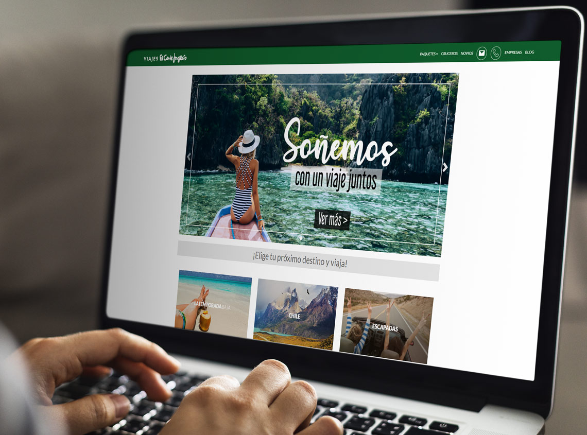

Diseñadora UX
Empatizar con el usuario y evaluar el sitio web de Viajes El Corte Inglés.
El Corte Inglés es uno de los más importantes grupos empresariales de España.
Hoy en día cuenta con más de 700 oficinas, lo que la posiciona como líder en su sector, teniendo a nivel internacional agencias en Francia, Bélgica, Portugal, Italia, Estado Unidos, Chile, México, Argentina, Perú, Cuba y Rep. Dominicana.
Dentro del Grupo, Viajes El Corte Inglés es una de las agencia de viajes más importantes del sector.
chile.viajeselcorteingleslatam.com
El sitio web de la empresa ofrece paquetes de viaje individuales y grupales para diferentes destinos de Chile y Europa, viajes para novios y en cruceros.
En esta instancia, el desafío consistió en analizar el trayecto que el usuario recorre a través del sitio web para poder obtener una cotización de viaje según sus necesidades y expectativas, y así poder identificar falencias en la plataforma y su servicio que puedan afectar su experiencia. Para ello fue necesario crear al usuario, conocer su entorno, pensamientos, dolores y ambiciones, y como interactúa con el servicio ofrecido.
¿Quién está usando esta plataforma?
Ingeniero Comercial de la Adolfo Ibañez, tiene 30 años, es soltero, no tiene rasgos que lo identifiquen con una etnia en particular. Trabaja para el área de Transformación Digital de una reconocida marca de Retail.
Vive actualmente en Lo Barnechea, en un departamento junto a sus 3 mejores amigos. Se mueve principalmente entre Providencia, Ñuñoa, Vitacura y Las Condes, pero por su trabajo debe recorrer gran parte de la capital.
Le gusta ver charlas TEDx, programas de viaje, ir a fiestas y viajar ya sea dentro o fuera de Chile. Quiere aprender nuevos idiomas. Es católico de herencia familiar pero actualmente se siente bastante lejano a la religión. De pensamiento político de centro-derecha. Sus vacaciones soñadas serían recorriendo Europa.
"Deseo poder vivir nuevas y emocionantes experiencias, consolidar mi PYME y en dos o tres años lograr independizarme laboralmente."
Es un heavy user de RRSS, principalmente instagram y linkedin. Administra gran parte de su vida a través de su iphone y apple watch. Cuenta con dominio en programas asociados a administración de compra/venta y marketing digital.
Se va a conectar principalmente desde su smartphone, por lo cual, quiere un sitio de uso fácil, donde pueda encontrar información sobre viajes y realizar la cotización de manera sencilla.
Se llevó a cabo un análisis sobre el trayecto e interacción que realiza el usuario a través del sitio web hasta obtener la cotización de viaje que desea.
A continuación, se muestran las pantallas de la navegación realizada por el usuario para realizar la tarea.
Tras el análisis expuesto anteriormente, se concluyó que los puntos negativos durante la navegación del usuario en el sitio web, se relacionan principalmente con los tiempos de carga, errores de códigos del sitio y la información recibida sobre el servicio.
En el caso de este formulario, el problema se presentó en no poder finalizar la operación desde el teléfono móvil por un error de códigos en el campo de validación de email.
Por otro lado, se identificó la falta de mayor detalle en la información de la cotización enviada, lo que posiblemente lleve a que el usuario se comunique por otra vía con la empresa, o se decida por los servicios de otra empresa.